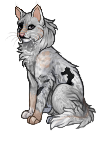

Северный Клан
Что же скрывают снега?
Кого мы встретим сегодня?

Текст истории...
Далее ▸
Встреча с...
Имя Персонажа
Это не конец...
...а только начало.
Воспоминания
🔒 Неизвестно
Встреча с...
???
1 / 5